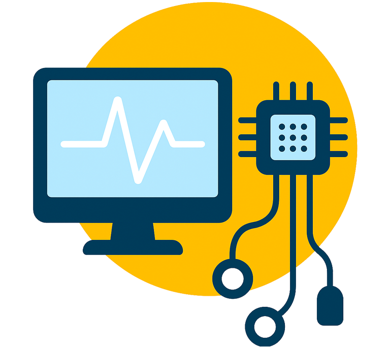

O Programa de Pós-Graduação em Engenharia Biomédica do ICT-Unifesp (PPGEB UNIFESP) tem como principal missão a formação de recursos humanos altamente qualificados para o desenvolvimento e aplicação de ferramentas tecnológicas nas áreas da Saúde. Partindo de uma base em Ciências Exatas e Engenharia, os alunos de mestrado do programa serão treinados em uma perspectiva interdisciplinar, integrada às Ciências Biológicas e à Medicina, para atuarem na resolução de problemas na área da saúde com o uso de tecnologia.
Contando com duas áreas de concentração - Bioengenharia e Instrumentação Biomédica - o programa possibilita a pesquisa e o desenvolvimento de soluções em um amplo espectro de temas, que vão desde métodos quantitativos e instrumentados para melhor compreender a fisiologia humana, até softwares e novos equipamentos que possam ser empregados para aprimorar o diagnóstico, prognóstico, intervenção e tratamento de diferentes condições patológicas.
Conheça mais sobre as nossa áreas de atuação
Estudo dos fenômenos e sistemas biológicos por meio de técnicas e métodos quantitativos. Com o foco no sistema biológico, a área integra ramos das Engenharias e da Ciência básica, como a Física, Química e Matemática, no desenvolvimento de técnicas, protocolos, modelos matemáticos e dispositivos que possam contribuir para aprimorar a compreensão de mecanismos fisiológicos e fisiopatológicos, com possíveis aplicações no diagnóstico, monitoramento e intervenção clínicos. Linha de pesquisa: Estudo de Biossistemas a partir de Modelos e Técnicas Quantitativa.

Estudo e desenvolvimento de técnicas matemático-computacionais e instrumentos, hardwares e softwares, voltados para aplicações na área da saúde. Com o foco na técnica ou no instrumento a ser desenvolvido, a área tem como objetivo principal a produção de inovações tecnológicas para apoiar o diagnóstico médico, aprimorar o monitoramento clínico-hospitalar e desenvolver novos métodos de intervenção para a melhoria da saúde humana. Linhas de pesquisa: Análise de Sinais e Imagens Biomédicas; Instrumentos Biomédicos.
Conheça nossas linhas de pesquisa
Visão Geral da Formação Profissional no PPGEB – UNIFESP
O perfil de egresso no programa de pós-graduação em Engenharia Biomédica da UNIFESP consiste de um profissional com capacidade de utilizar técnicas e conhecimentos das áreas de exatas, integradas ao contexto biológico, voltados para solucionar problemas, aprimorar e desenvolver conhecimento e inovações tecnológicas; atuando na pesquisa básica e/ou aplicada, bem como na docência.
Neste contexto, listamos as principais características direcionadas ao curso: